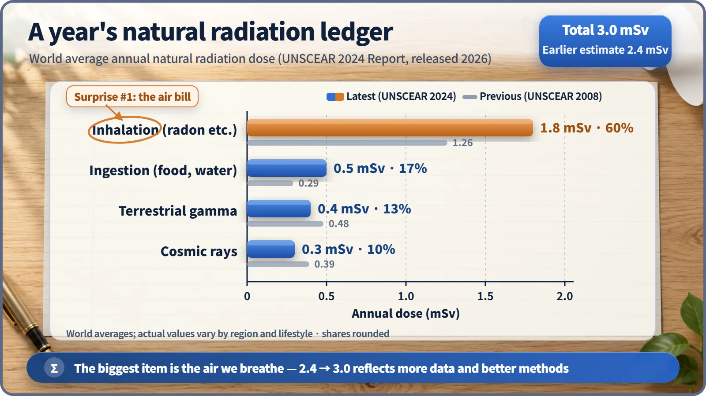
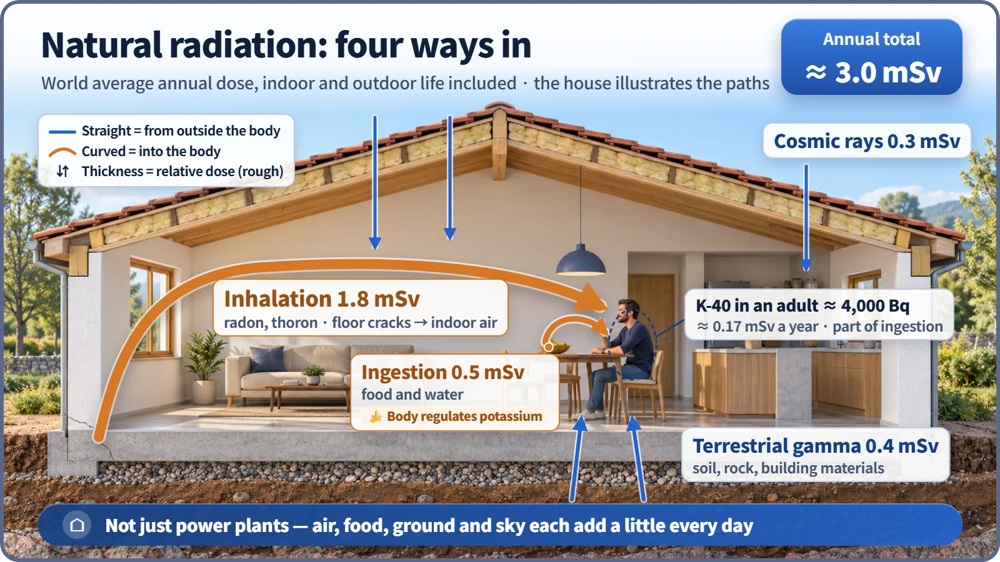

Nuclear & Radiation Basics · 018
Opening Your Yearly "Dose Budget" — Where Natural Radiation Comes From
We all receive about 3.0 mSv of natural radiation a year, and the biggest line item is the air we breathe.
Everyone receives natural radiation all year from the air, food, ground and space: about 3.0 mSv per year on world average. The biggest item is not cosmic rays but radon breathed in from the air, about 60% of the total. [1]
What if money left your account every day without a receipt?
First-time budget keepers know the feeling: no big purchases, yet small regular costs add up by month's end. Radiation is similar. Just by breathing, eating and standing on the ground, we take in a little radiation all year. Radiation that constantly reaches us from nature, regardless of human activity, is called natural radiation (or natural background radiation).
Let's sort it into line items. The unit is the millisievert (mSv), one-thousandth of the sievert, a dose unit based on the effect on the body.
The itemized statement: the top expense is "the air bill"
According to the latest report of the United Nations Scientific Committee on the Effects of Atomic Radiation (UNSCEAR), released in February 2026, the world average natural radiation dose is about 3.0 mSv per year. [1]
| Item | What it is | Dose (mSv/year) | Share |
|---|---|---|---|
| Inhalation | radon (and thoron) gas from uranium and thorium decay underground, plus its decay products | 1.8 | about 60% |
| Ingestion | potassium-40 and uranium- and thorium-series elements in food and water | 0.5 | about 17% |
| Terrestrial gamma | gamma rays from radioactive elements in soil, rock and building materials | 0.4 | about 13% |
| Cosmic rays | high-energy particles from space and the secondary radiation they create in the atmosphere | 0.3 | about 10% |
| Total | 1.8 + 0.5 + 0.4 + 0.3 | 3.0 | 100% |

Many people guess space radiation is the biggest share, but the real number one is radon inhalation, six times larger than cosmic rays.
Wait, didn't they use to say 2.4?
They did. The 2008 report's world average was 2.4 mSv (inhalation 1.26, terrestrial gamma 0.48, cosmic rays 0.39, ingestion 0.29). The Earth's radiation didn't suddenly increase: UNSCEAR states clearly that the change reflects data from more countries and more refined calculation methods, like switching to a better budgeting method and finally seeing expenses that had been slipping through. [2]
A radiation source inside your own wallet
A star of the ingestion item is potassium-40. Potassium is essential for your heart and nerves, and about 0.0117% of natural potassium is radioactive potassium-40. A 70 kg adult carries about 140 g of potassium, whose potassium-40 decays about 4,000 times per second: about 4,000 Bq. The resulting dose is about 0.17 mSv per year. Becquerels count how often decays happen and sieverts measure the effect on the body, so the two numbers can't be compared head to head.
Eating lots of bananas doesn't make it build up: the body regulates its potassium level and sends out what it doesn't need.

Just like utility bills differ by neighborhood
The 3.0 mSv is an average. The ground beneath you and how your home is built make a real difference; the 2008 report put the typical range at about 1 to 13 mSv per year. South Korea, for example, is estimated at around 3 to 4 mSv depending on the survey, similar to or slightly above the world average, often attributed to widespread granite.
Some places are extreme. In Ramsar, Iran, radium-bearing hot-spring deposits mean some homes have measured external radiation of up to around 260 mGy (milligrays, a unit of absorbed energy) per year. On the coast of Kerala, India, thorium-bearing monazite sand gives levels several times the world average. Studies of Kerala residents have not observed a clear increase in cancer, but research on low-dose effects is ongoing. [3] [4]
Cosmic rays increase the higher you go, and radon is a variable expense you can cut with ventilation; both deserve their own deeper look.
Why this budget matters when we talk about nuclear power
The public dose limit for artificial sources such as nuclear plants is 1 mSv per year, calculated excluding natural and medical radiation. Environmental monitoring around nuclear plants uses the area's usual natural radiation level as a baseline and checks whether measurements stray outside that natural range.
Radiation isn't gentler because it's natural or harsher because it's artificial; 1 mSv is evaluated by the same standard either way. What matters is the amount. Our yearly ledger holds about 3 mSv: 60% air, 17% food, 13% ground and 10% space.